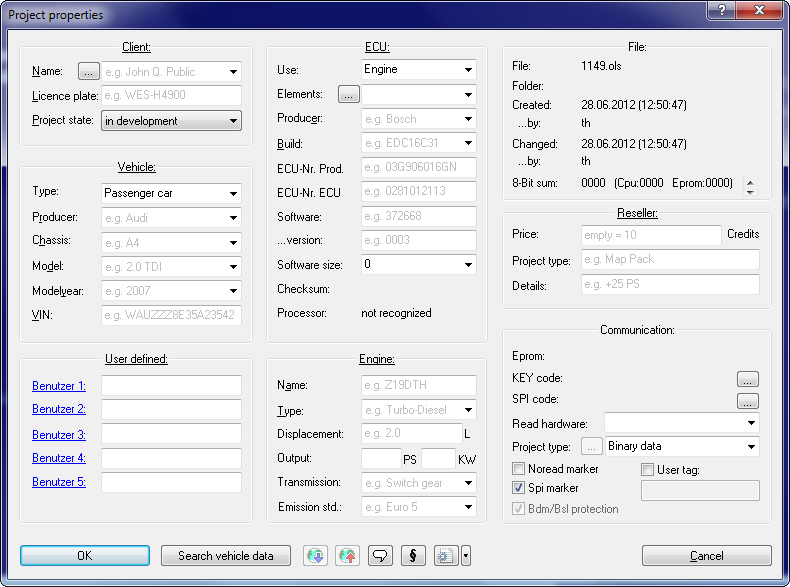
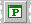

|
The Dialog Properties: Project (Menu Project) |

  
|
|
The Dialog Properties: Project (Menu Project) |
|

The properties of the active project may be edited with this dialog. If the project contains several versions the data displayed in this dialog applies to all versions. To make browsing your projects easier it is recommendable to fill in this dialog and use consistent values. To help you WinOLS automatically corrects many common wrong notations. You can configure this under "Miscellaneous > Configuration > Automatically".
A click on the hyperlink 'Client', 'Vehicle', etc. shows the properties of the other currently open projects as a menu. Click on a menu line if you want to use these values.
Client:
Enter the customer details here for your reference. The customer details can be used in reports. Use the button [...] to reach the customer list dialog. If you use the project state "in development" then the profile is hidden from WinOLS users that have the "non-developer" mode active. If you mark the project as "master" then it will displayed with higher relevance in the "Import similar" dialog.
Vehicle:
The fields ‘Producer‘, ‘Chassis‘ and ‘Model‘ can easily be filled in with the mouse. Just click (in the uppermost field) on the arrow to get a list. Immediately after you made your choice, the further drop-down lists will be filled with the matching data for the selected producer (or producer and chassis).
User defined:
In the lower left corner you can see 5 fields that you can use for your purposes. You can edit the field name by clicking on the blue underlined text. (The 5 field names are the same for all projects.)
ECU:
The field 'Elements' allows you to select the currently active element. Use the button '...' next to it to get to a subdialog which allows you to configure the elements in the project.
The field 'producer' is important for the automatic map search. An incorrect or empty value can decrease the number of found maps because WinOLS uses producer-specific algorithms.
With the field 'Software size' you may not only view the current size, but also change it. Please note that this will affect all versions of the current project and that the change cannot be undone. If you choose a software size smaller than it currently is, data will be lost permanently.
Communication:
Use the 'Read hardware' to set the hardware of the project. This has an influence on what export and hardware functions are available for the project. If you choose a BDM, BSL or Eprom project type, you can use the button '...' to view details.
The field 'Project type' allows you to remember the type of contents. Some details about the available options:
| · | Complete binary file => The dump contains all data from the hardware. |
| · | Partial (map data) => The dump contains only the maps. The rest is cut off. |
| · | Partial (full length) => The dump contains only the maps. The rest is cut empty (usually FF or 00). |
Using the 4 checkboxes you can insert up to 4 'tags' into the project hexdump data. This requires that either a checksum is used or that you manually add a patch tag block in the checksum dialog (extended mode). Noread is a general tag that is also supported by other programs and protects you again the reading of the programmed data by your competitors (encrypted variation). The checkbox 'Bdm/Bsl protection' works similar, but still allows you to read the data with a WinOLS with your customer number.
Buttons (from left to right):
| · | OK |
| · | Search vehicle data: You can let WinOLS recognize several technical information about the project. You can configure WinOLS at "Miscellaneous > Configuration > Automatically" to do this automatically for new projects. The button is red if a click will yield new data. |
| · | Search online: You can save a lot of time when you're filling the in the form. To achieve this, several characteristics from the project will be transferred to an internet database. Within seconds you'll receive a resulting list with matching models. With a single mouse click you may transfer the results into the form. |
| · | Store online: Sometimes it may happen that a model is not yet in the database, so you still have to enter the data manually. With the option you may store the model in the internet database. If you get similar models in future, they will automatically be recognized, too. |
| · | Project comment: Allows you to enter a comment for this project and connect files to the project. |
| · | Rights: Here you can disable rights for the project. This is useful for resellers. |
| · | ini-files: Exports an ini-file containing the project properties. You can drag that file into any WinOLS project to copy the data. Use the dropdown button to import the data from an ini/ifo file or to copy the project properties from another, open project. |
| · | Cancel |
Note:
The functions ‘Search online‘ and ‘Store online‘ only transfer a few characters of the projects to the internet database. The project itself and the changes you made will not be transferred and continue to exist only on your harddisk.
Note:
You can also fill the property fields of a project with values by dragging a Byteshooter ifo file or a WinOLS ini file into the project window. This is done automatically if such a file exists in the same folder and with the same filename (except for the suffix).
See also:
Shortcuts:
| Symbol bar: |  |
| Keyboard: | Ctrl+Alt+Enter |